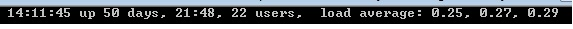
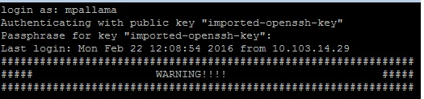

Operate UNIX Secure Shell from C#.net
Introduction
The following sample provides UNIX shell interaction from your c#.net console applications so that you can have a chance to eliminate putty kind of clients.
Building the Sample
We need SSH libraries to build this sample.
Description
Sample provides simple strings declarations to define commands and established connection with your definitions.
the following nuget helps to reach libraries from your package manager console
PM > Install-Package SSH.NET -Version 2013.4.7
From this sample you can run UNIX shell commands from your c#.net. Lets Test sample
I just opened my UNIX shell , ran command is [maruthi @ cs ~] $ uptime

So you can do the same thing from your c#.net

Check your c# solution successfully ran your UNIX shell commands with help of SSH Libraries.
var command = ssh.CreateCommand("uptime");
var result = command.Execute();
Console.WriteLine(result);
var command = ssh.CreateCommand("uptime");
var result = command.Execute();
Console.WriteLine(result);
Now, we will take a look how to establish a connetcion from C#.net to UNIX Shell. basically you can establish a connection by using two ways, First one is password authentication and Private Key Authentication.
The following code will helps you to connect shell by using password authentication.
public ConnectionInfo CreateConnection()
{
ConnectionInfo connection;
ConnectionInfo connInfo = new ConnectionInfo("HOSTNAME", port, "UserName",
new AuthenticationMethod[]{
new PasswordAuthenticationMethod("UserName","Password"),
});
return connInfo;
}
public ConnectionInfo CreateConnection() { ConnectionInfo connection; ConnectionInfo connInfo = new ConnectionInfo("HOSTNAME", port, "UserName", new AuthenticationMethod[]{ new PasswordAuthenticationMethod("UserName","Password"), }); return connInfo; }
Private key Authentication :
The following code snippet will helps you to connect UNIX shell via SSH-RSA Privatekey.
public ConnectionInfo CreateConnection()
{
const string PrivateKeyFilePath = @"D:\RSA-SSHKEY";
ConnectionInfo connection;
ConnectionInfo connInfo = new ConnectionInfo("Hostname", port, "username",
new AuthenticationMethod[]{
new PasswordAuthenticationMethod("username","password"),
new PrivateKeyAuthenticationMethod("username",new PrivateKeyFile[]
{
new PrivateKeyFile("PrivateKeyFilePath","passphrase")
}),
});
return connInfo;
}
public ConnectionInfo CreateConnection() { const string PrivateKeyFilePath = @"D:\RSA-SSHKEY"; ConnectionInfo connection; ConnectionInfo connInfo = new ConnectionInfo("Hostname", port, "username", new AuthenticationMethod[]{ new PasswordAuthenticationMethod("username","password"), new PrivateKeyAuthenticationMethod("username",new PrivateKeyFile[] { new PrivateKeyFile("PrivateKeyFilePath","passphrase") }), }); return connInfo; }
The above snippet worked for below one. LOG IN unix shell with private key authentication and passphrase

Exeucte sample command,
static int Main(string[] args)
{
try
{
using (var ssh = new SshClient(new Program().CreateConnection()))
{
ssh.Connect();
var command = ssh.CreateCommand("uptime");
var result = command.Execute();
Console.WriteLine(result);
ssh.Disconnect();
}
}
catch(Exception ex)
{
Console.WriteLine(ex.Message.ToString());
}
Console.Read();
return 0;
}
static int Main(string[] args) { try { using (var ssh = new SshClient(new Program().CreateConnection())) { ssh.Connect(); var command = ssh.CreateCommand("uptime"); var result = command.Execute(); Console.WriteLine(result); ssh.Disconnect(); } } catch(Exception ex) { Console.WriteLine(ex.Message.ToString()); } Console.Read(); return 0; }
Source Code Files
- Program.cs - Sample command execution and implementation
- UnixConnection.cs - Connection snippet for Password, SSH-RSA Private key
More Information
https://en.wikipedia.org/wiki/Secure_Shell
https://en.wikipedia.org/wiki/Key_authentication